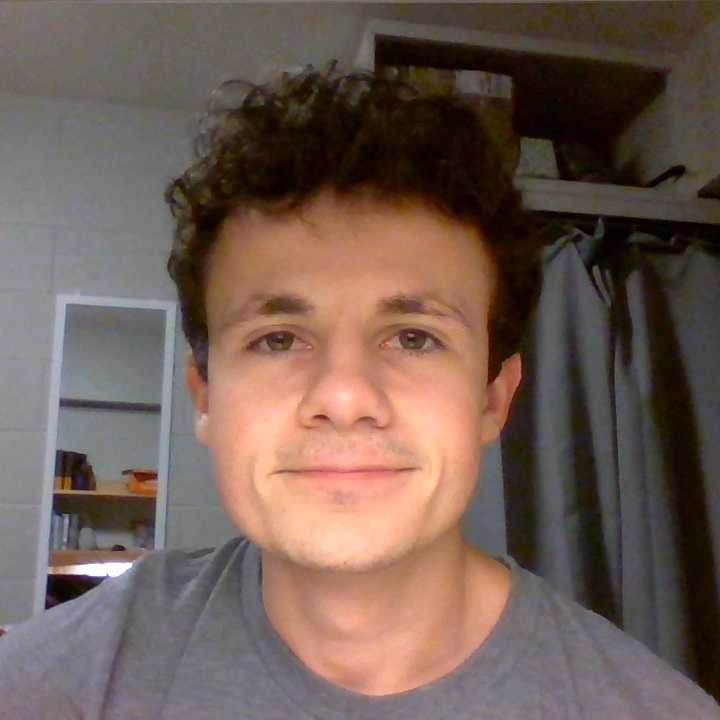

A Quick Introduction
My name is Benjamin Schlemmer, and I was born in Decatur, Indiana and raised in Ohio City, Ohio.
I am a senior in college attending Ashland University
with a major in Computer Science and a minor
in Cyber Security. For fun, I like to work on video game design and development, and after graduation,
I would like to go into video game design and development or software development.
Growing Up
I was born in 1998 and grew up about 5 miles away from the very rural Ohio City, Ohio, surrounded by
flat crop fields of typically beans and corn. I went to school at Parkway Local Schools in Rockford, Ohio,
from kindergarten to high school graduation. I spent most of my childhood free time playing outside, often
climbing trees, and playing video games. In 2011, the summer after my 5th grade year, I was diagnosed
with acute lymphoblastic leukemia and have since then been treated and have fully recovered. From 7th grade
and on I participated in track and field and cross country. My senior year of high school, our cross country
team went to both regionals and then state for the first time in our school's history, and I was the top runner
for our team at the state meet. Most of the elective classes I took in highschool were art classes,
including painting, ceramics, and animation. During my senior year I made my first video game in an independent
study class. After graduating, I made the last minute decision to go to college at Ashland University and major
in computer science. I added a cyber security minor along the way, and I have one year left until I graduate.
Interests
- ◈ Video Game Design & Development
- ◈ Software Development
- ◈ The Outdoors / Nature
- ◈ Video Games
- ◈ Cartoons
- ◈ Animation
Getting Started with Programming
Being a pretty avid gamer, I always thought it would be cool to make my own video game. I had
little experience in technology and no experience in coding. For all I knew, people programmed
games by typing a bunch of 1's and 0's. After doing a little research, I found software online
that people could use to make their own games and tutorials online of how to use these softwares.
I got permission to take an independent class to teach myself how to make a game, and I spent my
study halls and some time outside school working on it. I used the free version of
Game Maker Studio
to make the game and a program called
LMMS to make my own music for the game. By the end of the year
I had a completed short adventure game. The Game Maker software had many "drag'n'drop"
features to make the development easier, but the YouTuber,
HeartBeast, that provided the tutorials that I watched
recommended to do as much programming as much by hand as possible. This was very beneficial to me because I
learned a lot of basics with programming and design. My introduction to programming class that I took my
first semester of college was very easy for me because of this experience.
So far in college I have mostly learned Java, but I've also gotten
a bit of experience in HTML and CSS, a better undertsnading of computer architecture and hardware,
a little experience in C++, and some experience with Linux.
Skills & Experience
The primary language we've been taught is Java,
so that is the language with which I am most proficient. I have also gained decent experience in
HTML and CSS, and I
have had a little experience with C++. Beyond programming,
I have somewhat of a knack for art, specifically drawing, I
have some leadership and groupwork
experience, and mathematics comes pretty easily to me.